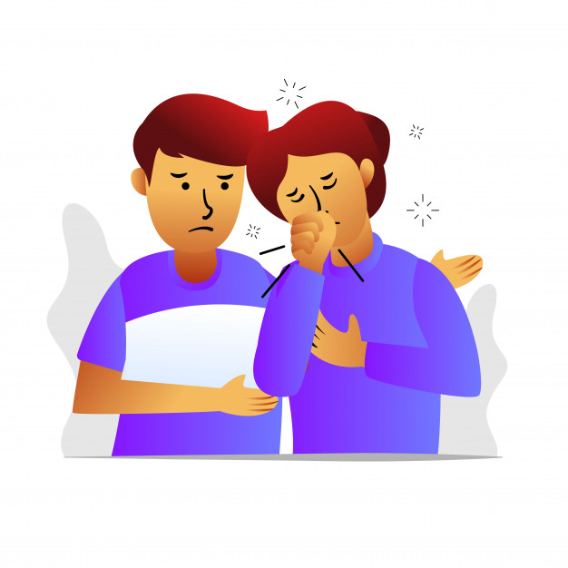
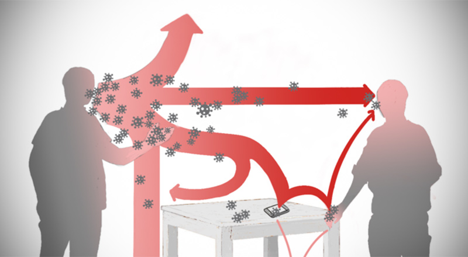

Que es la prevencion
El significado de prevencion no es mas que prevenir algo. Se refiere a la preparación con la que se busca evitar, de manera anticipada, un riesgo, un evento desfavorable o un acontecimiento dañoso. Pueden prevenirse enfermedades, accidentes, delitos, etc.
es la disposición que se hace de forma anticipada para minimizar un riesgo. El objetivo de prevenir es lograr que un perjuicio eventual no se concrete. Esto se puede apreciar en los dichos populares “más vale prevenir que curar” y “mejor prevenir que curar”. Puesto en otras palabras, si una persona toma prevenciones para evitar enfermedades, minimizará las probabilidades de tener problemas de salud. Por lo tanto, es mejor invertir en prevención que en un tratamiento paliativo.
Es posible asimilar la prevención al cuidado o la precaución, más allá de lo que respecta a uno mismo. Se pueden tomar prevenciones en la vivienda, en el auto (para evitar accidentes, etc.)

Como puedes prevenir el coronavirus
Segun los medicos para evitar el contagio de coronavirus hay que tomar muchas medidas, entre algunas de ella estan:
1. Lavarse las manos constantemente con jabon y agua o tambien puede usar desifectante como alcohol manita limpia entres otros. Debes seguir estos pasos al pie de la letra porque lo ante mencionado desactivan el virus y es poco provable que te contagie.
2. Mantener la distancia social es vital para prevenirse
como mínimo, una distancia de un metro con cualquier persona que tenga un resfriado, tosa o estornude.
Si está demasiado cerca de alguien que tose o estornuda, podría respirar las gotas expulsadas por la nariz o boca y, con ellas, el virus de la COVID-19.
3. Evite tocarse la cara y los ojos sin ante haber lavarte las manos, no se toque los ojos, la nariz o la boca. Cúbrase la boca y la nariz con el codo doblado o con un pañuelo de papel desechable al toser o estornudar.
ya que Puede contagiarse con el virus a través de los ojos, la nariz o la boca. Una buena higiene puede protegerle a usted y a las personas que estan a su alredor.
